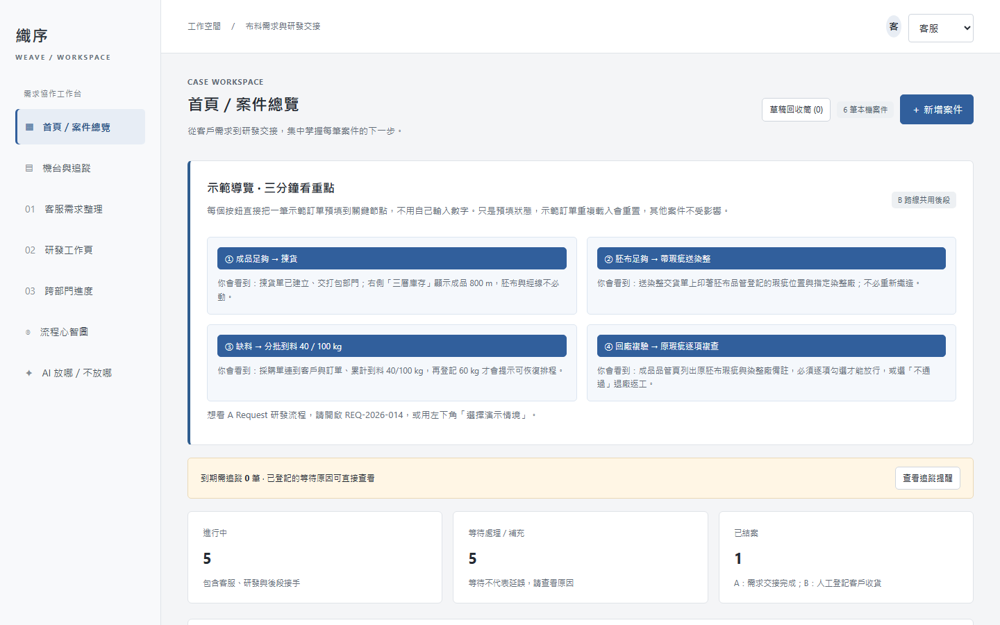
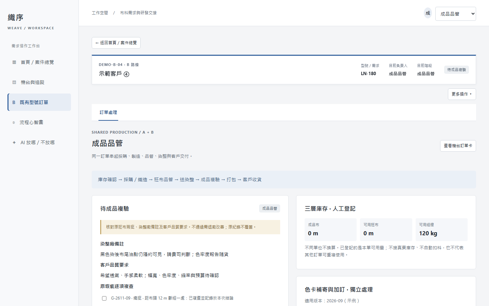
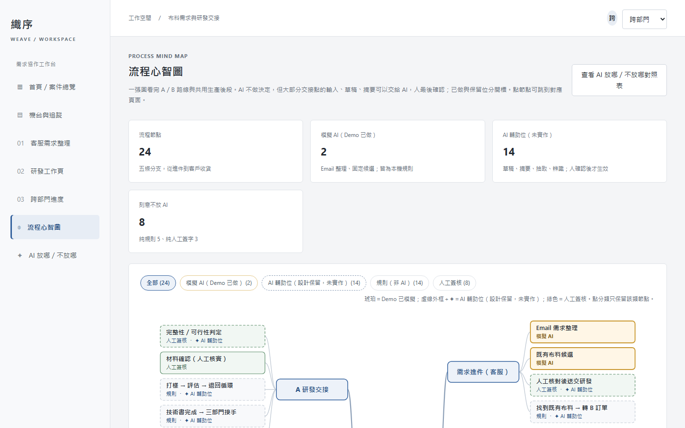
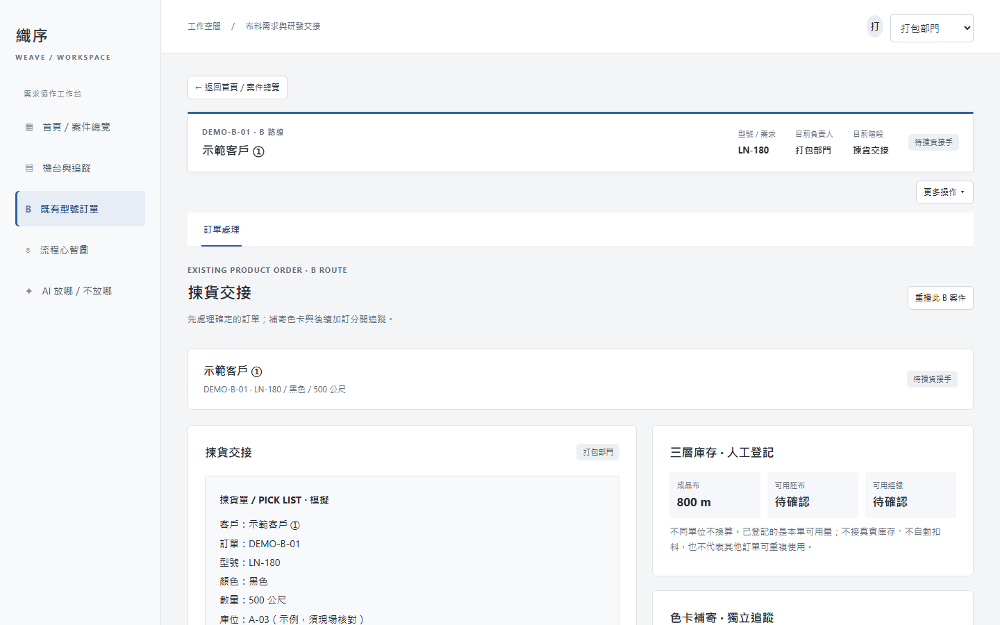
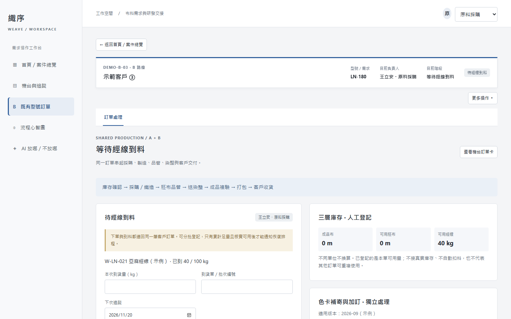
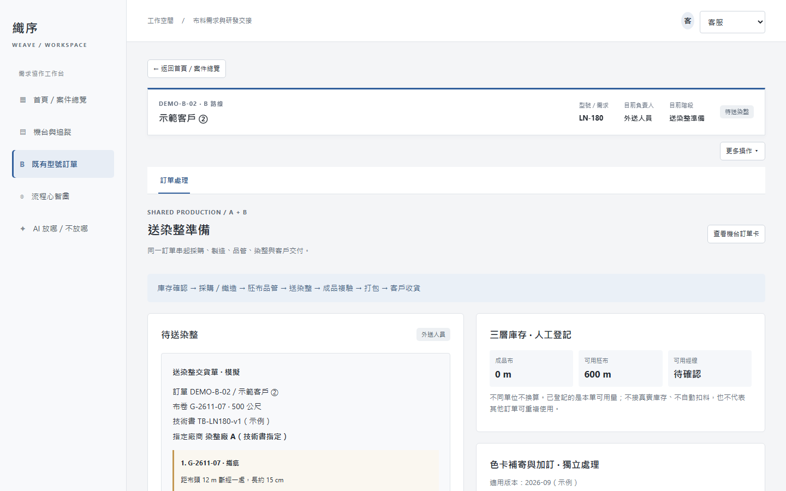
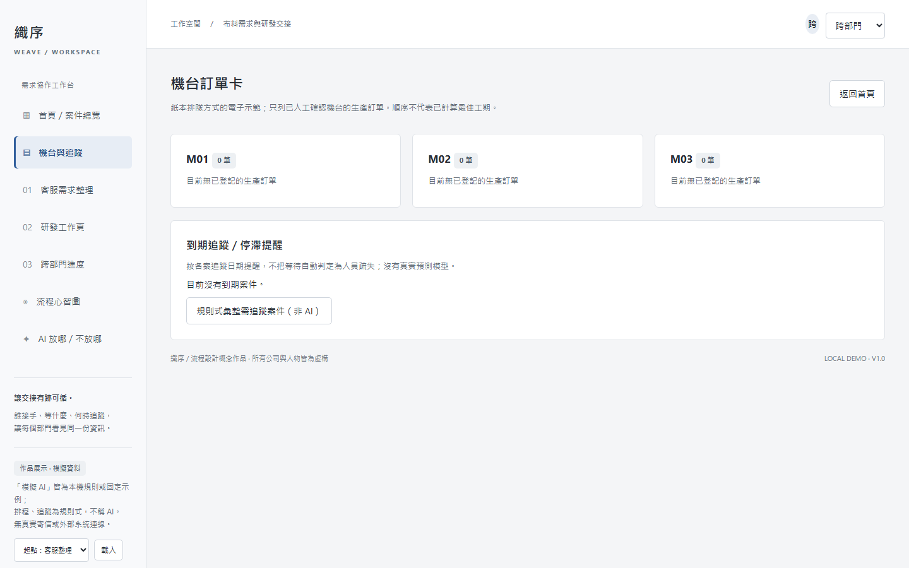

一家約三十人的紡織公司，訂單在七個部門之間接力
客戶的需求從一封 Email 進來：有時是「我想找這樣的布」，有時是「我要再訂這個型號」。接著經過客服整理、研發評估、採購補料、織造、胚布品管、外送染整、成品複驗、打包出貨，最後人工確認客戶收到。每一站都有人負責，但沒有一個地方看得到整條線。
我在這個環境裡的觀察是：布料本身會往前走，資訊卻常常留在上一站。
為一家紡織公司的客服、研發、採購、生產、品管、染整與打包，設計一個把需求、原料與品質紀錄接在一起的交接工作台。純前端可操作原型，從問題觀察到 269 項流程測試。



客戶的需求從一封 Email 進來：有時是「我想找這樣的布」，有時是「我要再訂這個型號」。接著經過客服整理、研發評估、採購補料、織造、胚布品管、外送染整、成品複驗、打包出貨，最後人工確認客戶收到。每一站都有人負責，但沒有一個地方看得到整條線。
我在這個環境裡的觀察是：布料本身會往前走，資訊卻常常留在上一站。
公司不缺系統，缺的是「下一位接手的人知道該知道的事」。所以這個作品刻意不碰庫存扣減、財務、權限；只處理需求、進度、等待原因與品質紀錄怎麼跟著訂單走。這個邊界在第 03 章會寫成明確的做與不做。
「那批布寄出了嗎？」
「這批原料是給誰的？」
「原本的瑕疵還在嗎？」
選一個節點，看下一位接手者需要的資訊。資料取自 Demo 示範訂單。
DESIGN PRINCIPLE把需要的資訊，放在需要做決定的地方。
客服不知道布在哪、採購不知道料給誰、品管不知道原本的瑕疵在哪。三個問題的共同點是：做決定的人手上沒有做決定所需的資訊。所以設計目標不是幫人做決定，而是確保每一次交接，接手的人看得到前面發生過什麼、現在在等什麼、下一步是什麼。
不做的項目在 Demo 的說明文件與畫面裡都寫明，避免讓觀看者以為這是可上線的系統。
Email 整理 → 既有布料查找 → 人工核對送交研發 → 完整性、可行性、材料、打樣、評估、技術書 → 三部門接手。查到合適既有型號可直接轉成 B 訂單並鎖定需求；技術書完成可建立生產訂單接到共用後段。
人工確認型號、顏色、數量 → 成品足量直接揀貨；不足查胚布；再不足確認經線與排程。補色卡獨立追蹤，不擋已確認訂單；追加顏色另建關聯訂單。
B 訂單確認後，右側固定顯示成品布、可用胚布、可用經線三個數字，由人工登記。足量與否是業務規則，直接算出來分流，不讓任何模型猜。揀貨、打包、出貨頁都看得到同一張卡。

每筆採購對應一張訂單與客戶。到料分批登記 kg、批號、人工核實，重複批次與超過未到量會被擋下。累計足量才提示生產恢復排程，客服同步看到到料通知，不必口頭追問「這批是給誰的」。

胚布品管登記的瑕疵連回卷號，送染整的交貨單帶上，回廠後成品複驗頁把原瑕疵、染整廠備註、客戶品質要求放在同一個畫面，必須逐項勾選才能放行。不通過退回同一技術書指定的廠商改善，所有外送與品管紀錄保留。

停留時間包含待料、排隊與外部加工，在機台與追蹤頁用來看哪裡卡住，不用來直接歸責某人。到期追蹤是規則式彙整，畫面上明示不是 AI 預測。

已採購、生產或外送的案件取消時，系統列出對應的善後事項逐項處理，但不會假裝自動撤回採購或取回外送的布。只有未送交、無關聯的草稿可以移入回收筒並還原，沒有永久刪除。
不依賴瀏覽器，用 Node 直接執行真實的事件處理函式：分批到料的防重與超量、複驗漏勾一項不得放行、取消後的善後清單、A→B 轉單後原需求鎖定、重新載入後資料仍在。每次改動都重跑；測試輸出隨 Demo 附上。
這些不等於真實使用者測試。目前只在桌面瀏覽器 1280 與 900 寬實測，手機寬度未完整驗證。
首頁四個按鈕把示範訂單直接放到揀貨、帶瑕疵送染整、分批到料 40/100 kg、回廠複驗四個節點，不用自己輸入數字走完全程。這是審閱後補的：觀看者的時間比完整流程重要。
AI 不做決定，但幾乎每個交接點的輸入與輸出，都有它可以站的位置。我把「已做」和「保留位」分開標，不把模擬說成實作。
Email 轉欄位草稿，逐欄附原文依據；既有布料候選標示不符原因。客服核對後才建案。
2 個節點 · 本機規則模擬，未串接模型供應商送貨單抽 kg 與到料日、手寫瑕疵單辨識、技術書初稿、各部門交接摘要、催辦與出貨通知、卡關原因摘要。
14 個節點 · 已設計位置，尚未實作三層庫存分流、採購綁單防重、色卡追蹤交給規則；型號確認、材料核實、複驗放行、收貨結案由人簽字。
8 個節點 · 不讓模型猜數量或放行品質五條分支、24 個節點，琥珀色是 Demo 已模擬的 AI，虛線外框是保留位，綠色是人工簽核。可依分類篩選，點節點跳到對應畫面。另有一頁對照表寫每個環節為什麼這樣放、未來整合才可能做到什麼。
這個作品呈現我如何把現場觀察轉成分支、例外與確認條件，再用操作回饋修正流程。它目前是本機概念原型：沒有企業導入、沒有效益數字、沒有真實 AI、庫存扣減、多人同步或物流串接；角色切換只是視角，不是權限。
下一步是讓沒看過的人實際操作，看流程是否清楚，而不是繼續加功能。
上方載入實際本機 Demo，會顯示你在這台瀏覽器保存過的案件；點擊後在新分頁操作。資料只存在瀏覽器本機，沒有後端。
從首頁示範導覽，體驗「分批到料」與「原瑕疵複查」。